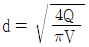
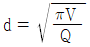
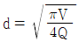
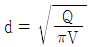
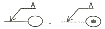
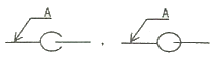
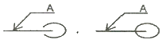
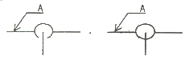
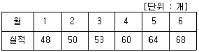
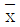

에너지관리기능장 (2014-04-06 기출문제)
1과목: 임의 구분
1. 상당증발량 2500 kg/h, 매시 연료소비량 150kg 인 보일러가 있다. 급수온도 28℃, 증기압력 10 kgf/cm2일 때, 이 보일러의 효율은 약 몇 % 인가? (단, 연료의 저위발열량은 9800 kcal/kg 이다.)
- 65%
- 77%
- 92%
- 98%
(정답률: 71%)

2. 증기난방법의 종류 중 응축수 환수방식에 의한 분류에 해당되지 않는 것은?
- 저압 환수식
- 중력 환수식
- 진공 환수식
- 기계 환수식
(정답률: 84%)
3. 방열관의 입구, 출구의 높이차가 500mm이고 입구의 온도 60℃, 출구의 온도 50℃일 때, 방열관에서 순환수두는 약 몇 mmH2O 인가? (단, 50℃의 비중 0.9784, 60℃의 비중은 0.9684 이다.)
- 3
- 4
- 5
- 6
(정답률: 59%)
4. 보일러의 성능을 나타내는 용어에 관한 설명으로 옳지 않은 것은?
- 증발계수는 환산증발량을 실제증발량으로 나눈 값이다.
- 증발율은 증발량을 보일러 본체의 전열면적으로 나눈 값이다.
- 연소율은 화격자 단위면적당 단위시간에 연소할 수 있는 연료의 량이다.
- 환산증발량은 실제증발량을 상용압력하에서 발생되는 증기량으로 환산한 값이다.
(정답률: 51%)
5. 보일러의 수위를 시각적으로 판독하기 위해 설치하는 수면계의 종류가 아닌 것은?
- 2색식 수면계
- 사각식 수면계
- 유리관 수면계
- 평형반사식 수면계
(정답률: 78%)
6. 복사난방의 특징에 관한 설명으로 옳지 않은 것은?
- 동일 방열량의 경우 열손실이 비교적 작다.
- 예열시간이 걸리므로 일시적 난방에는 부적당하다.
- 증기, 온수난방에 비해 설비비용이 다소 많이 든다.
- 실내 공기의 대류가 많으므로 바닥 먼지의 상승이 많다.
(정답률: 85%)
7. 방출밸브의 방출압력은 최고 사용압력의 몇 % 범위 이내를 초과한 압력인가?
- 5%
- 10%
- 15%
- 20%
(정답률: 72%)
8. 온수난방에 관한 설명으로 옳지 않는 것은?
- 대류난방법에 속한다.
- 방열량을 조절할 수 없다.
- 팽창관에는 밸브를 사용할 수 없다.
- 온수순환방법에는 중력순환식과 강제순환식이 있다.
(정답률: 72%)
9. 보일러 출력계산에 사용하는 난방부하의 계산방법이 아닌 것은?
- 열손실 열량으로부터 계산
- 간이식으로부터 열손실 계산
- 예열부하로부터 열손실 계산
- 상당 방열면적(EDR)으로부터 계산
(정답률: 77%)
10. 기체연료에 관한 설명으로 옳지 않은 것은?
- 고부하 연소가 가능하다.
- 누설 시 화재 폭발의 위험이 없다.
- 다른 연료에 비해 매연 발생이 적다.
- 적은 과잉공기비로 완전연소가 가능하다.
(정답률: 89%)
11. 강철제 증기보일러의 안전밸브 및 압력방출장치의 크기는 호칭지름이 25A 이상이어야 하지만, 20A 이상으로 할 수 있는 경우는?
- 최대증발량이 4t/h인 관류보일러
- 최고사용압력이 0.2MPa(2kg/cm2)인 보일러
- 최고사용압력이 1MPa(10kg/cm2)이고, 전열면적이 3m2인 보일러
- 최고사용압력이 1MPa(10kg/cm2)이고, 동체 안지름이 600mm, 길이가 1000m인 보일러
(정답률: 69%)
12. 보일러 난방기구인 방열기에 관한 설명으로 옳지 않은 것은?
- 주형 방열기에는 2세주, 3세주, 4세주형의 3종류가 있다.
- 방열기의 호칭은 종별-형×절수(쪽수, 섹션수)로 표시한다.
- 방열기는 벽면과 50~65mm 정도 간격을 두어 설치하는 것이 좋다.
- 증기방열기의 표준상태에서 발생하는 표준방열량은 650kcal/m2·h 이다.
(정답률: 91%)
13. 다음 중 유량조절 범위가 가장 넓은 오일(oil) 연소용 버너는?
- 유압식 버너
- 저압공기식 버너
- 회전식 버너
- 고압기류식 버너
(정답률: 80%)
14. 링겔만 농도표의 도표 번호가 NO.2 일 때 매연농도는 얼마인가?
- 10%
- 20%
- 40%
- 80%
(정답률: 66%)
15. 다음 열전대 온도계 중 가장 높은 온도를 측정할 수 있는 것은?
- IC(철-콘스탄탄) : J형
- CC(구리-콘스탄탄) : T형
- CA(크로멜-알루멜) : K형
- PR(백금-백금로듐) : R형
(정답률: 83%)
16. 사이클론(cyclone) 집진장치의 주 원리는?
- 압력차에 의한 집진
- 물에 의한 입자의 여과
- 망(screen)에 의한 여과
- 입자의 원심력에 의한 집진
(정답률: 92%)
17. 자동제어에서 목표값이 의미하는 것은?
- 잔류 편차값
- 조절부의 조절값
- 동작 신호값
- 제어량에 대한 희망값
(정답률: 80%)
18. 탄소 12kg을 완전 연소시키기 위하여 필요한 산소량은?
- 16kg
- 24kg
- 32kg
- 36kg
(정답률: 77%)
19. 어떤 원심펌프가 회전수 600rpm에서 양정 20m이고, 송출량이 매분 0.5m3이다. 이 펌프의 회전수를 900rpm으로 바꾸면 양정은 얼마나 되는가?
- 25m
- 30m
- 45m
- 60m
(정답률: 59%)
20. 계장제어의 측정 시스템 중 액면계의 종류에 해당하지 않는 것은?
- 면접식
- 플로트식
- 차압식
- 평형반사식
(정답률: 60%)
2과목: 임의 구분
21. 연돌에 관한 설명으로 옳지 않은 것은?
- 연돌은 강판제 또는 철근콘크리트로 제작한다.
- 연돌 설계 시에는 풍압, 지진력, 열응력 등을 고려한다.
- 연돌 내 가스와 대기의 온도차가 작을수록 통풍이 좋다.
- 가스의 속도는 자연통풍인 경우 3~4m/s, 강제통풍인 경우 6~10m/s가 적절하다.
(정답률: 82%)
22. 과열기에 관한 설명으로 옳지 않은 것은?
- 보일러 전열면 중 가장 온도가 높은 부분이다.
- 과열기를 사용하면 보일러의 증발능력이 증대한다.
- 연소가스의 흐름에 따라 병류형, 향류형, 혼류형이 있다.
- 보일러 본체에서 발생된 증기를 연소실이나 연도에서 다시 가열하여 과열증기를 만드는 장치이다.
(정답률: 46%)
23. 난방부하에 관한 설명으로 옳은 것은?
- 틈새바람의 양을 예측하는 방법으로 환기횟수법이 있다.
- 건축물 구조체에서의 열전달은 열전달계수와 관련이 있다.
- 표면열전달계수는 풍속과는 관련이 없고 재질에 영향을 받는다.
- 위험율 2.5% 온도는 최대부하에 근거한 외기온도 보다 2.5% 낮은 온도를 기준한다.
(정답률: 83%)
24. 가는 관으로 액체가 올라가는 현상은 무엇인가?
- 부착성 현상
- 모세관 현상
- 팽창성 현상
- 압축성 현상
(정답률: 93%)
25. 1시간 동안에 온도차 1℃당 면적 1m2를 통과하는 열량으로 단위가 kcal/m2·h·℃로 표시되는 것은?
- 열복사열
- 열관류율
- 열전도율
- 열전열율
(정답률: 80%)
26. 보일러수 중에 포함된 실리카(SiO2)에 관한 설명으로 옳지 않은 것은?
- 알루미늄과 결합해서 여러 가지 형의 스케일을 생성한다.
- 실리카 함유량이 많은 스케일은 연질이므로 제거가 쉽다.
- 저압 보일러에서는 알칼리도를 높혀 스케일화를 방지할 수 있다.
- 보일러수에 실리카가 많으면 캐리오버에 의해 터빈날개 등에 부착하여 성능을 저하시킬 수 있다.
(정답률: 86%)
27. 보일러 청관제로서 슬러지 조정제로 사용되는 것은?
- 전분
- 탄산나트륨
- 히드라진
- 수산화나트륨
(정답률: 70%)
28. 보일러를 6개월 이상 장기간 사용하지 않고 보존하는 경우 가장 적절한 보존 방법은?
- 습식 보존법
- 건조 밀폐 보존법
- 소다 만수 보존법
- 보통 만수 보존법
(정답률: 93%)
29. 액체 중질유 B-C에 기준 이상의 수분이 함유되어 있을 때 안전적인 측면에서 어떠한 위험이 있는가?
- 수분입자가 순간폭발로 연료의 미립화를 돕는다.
- 수분이 버너, 컵 등에 녹을 만들어 연료 미립화를 방해하믈 폭발사고를 유발한다.
- 연료 예열로 관내에서 수분이 증발하여 연료 Pumping을 끊어 맥동연소 폭발가능성이 있다.
- 연료 내의 수분이 로 내에서 열에 급격히 팽창하여 공간 면적이 커지므로 폭발사고를 유발한다.
(정답률: 72%)
30. 가성취화현상을 가장 적절하게 설명한 것은?
- 물과 접촉하고 있는 강재의 표면에서 철이온이 용출하여 부식되는 현상이다.
- 보일러 강판과 관이 화염의 접촉으로 화학작용을 일으켜 부식되는 현상이다.
- 청관제인 탄산나트륨을 과다하게 공급하여 보일러수가 알칼리화 되어 부식되는 현상이다.
- 보일러판의 리벳트 구멍 등에 농후한 알칼리 작용에 의한 강 조직을 침범하여 균일이 생기는 현상이다.
(정답률: 88%)
31. 액체 속에 잠겨 있는 곡면에 작용하는 수직분력에 관한 설명으로 옳은 것은?
- 곡면에 의해서 배제된 액체의 무게와 같다.
- 곡면의 수직 투영면에 비중량을 곱한 값이다.
- 곡면 수직부분 위에 있는 액체의 무게와 같다.
- 중심에서 비중량, 압력, 면적을 곱한 값과 같다.
(정답률: 67%)
32. 보일러 연소생성물 중 질소산화물을 억제하는 대책으로 옳지 않은 것은?
- 저질소 연료를 사용한다.
- 2단 연소를 시켜 적은 공기로 빠르게 연소시킨다.
- 고온 연소범위에서의 연소가스 체류시간을 짧게 한다.
- 연소온도를 높게 하고, 국부과열부가 생기지 않게 한다.
(정답률: 44%)
33. 보일러 증기압력이 상승할 때의 상태변화에 관한 설명으로 옳지 않은 것은?
- 현열이 증가한다.
- 증발잠열이 증가한다.
- 포화온도가 상승한다.
- 포화수의 비중이 작아진다.
(정답률: 59%)
34. KS B 62⑤(육상용 보일러의 열 정산 방식)에서 열정산을 하는 보일러의 표준적인 범위에 해당되는 것은?
- 급수펌프
- 흡출 송풍기
- 미분탄기
- 연료유 가열기
(정답률: 62%)
35. 증기 원동소의 기본 사이클인 랭킨 사이클은 어떠한 상태로 구성되어 있는가?
- 등온변화와 단열변화가 둘이다.
- 단열변화, 정적변화가 각각 둘이다.
- 정압변화가 둘, 단열 변화가 둘이다.
- 단열, 정압, 정적, 폴리트로프 변화가 각각 하나이다.
(정답률: 65%)
36. 물체의 온도변화 없이 상(phase)의 변화를 일으키는데 필요한 것을 잠열이라고 하는데, 다음 중 잠열로 볼 수 없는 것은?
- 반응열
- 증발열
- 승화열
- 융해열
(정답률: 65%)
37. 22℃의 물 10톤에 90℃의 고온수 3톤을 섞으면 혼합 후의 물의 온도는 약 얼마인가? (단, 물의 비중량은 1kg/ℓ, 비열은 1kcal/kg·℃ 이다.)
- 28.8℃
- 35.2℃
- 37.7℃
- 40.3℃
(정답률: 56%)
38. 일의 열당량의 값은?
- 427 kcal/kg
- 427 dyne/kg
- 1/427 kcal/kg·m
- 1/427 kg·m/kcal
(정답률: 82%)
39. 직경 20cm인 원관 속을 속도 7.3m/s 로 유체가 흐를 때 유량은 약 몇 m3/s 인가?
- 0.23
- 3.67
- 13.76
- 51.1
(정답률: 55%)
40. 다음 중 안전보호구에 해당되지 않는 것은?
- 공구상자
- 차광안경
- 방진안경
- 방독마스크
(정답률: 94%)
3과목: 임의 구분
41. 신에너지 및 재생에너지의 개발 및 이용·보급촉진법에서 정의한 신에너지 및 재생에너지에 해당되지 않는 것은?
- 태양에너지
- 연료전지
- 수소에너지
- 원자력
(정답률: 89%)
42. 설비 배관에 있어서 유속을 V, 유량을 Q 라 할 때 관경 d를 구하는 식은?




(정답률: 82%)
43. 벨로즈(Bellows) 트랩의 특징을 설명한 것 중 틀린 것은?
- 과열증기에도 사용할 수 있다.
- 초기의 가동 시 공기의 배출 능력이 있다.
- 부식성 물질이나 수격작용에 파손되기 쉽다.
- 소형으로 다량의 응축수를 배출시킬 수 있다.
(정답률: 54%)
44. 바이패스(by-pass) 배관을 설치하기에 가장 부적절한 것은?
- 온도조절 밸브
- 솔레노이드 밸브
- 감압 밸브
- 증기트랩
(정답률: 77%)
45. 연강용 피복 아크 용접봉 종류 중 피복제 중에 석회석이나 형석을 주성분으로 사용한 것은?
- 일루미나이트계
- 라임티타니아계
- 고셀룰로오스계
- 저수소계
(정답률: 77%)
46. 냉간가공과 열간가공을 구분하는 온도는?
- 풀림온도
- 재결정온도
- 변태온도
- 절대온도
(정답률: 81%)
47. 동관용 공구의 설명 중 틀린 것은?
- 티뽑기 : 직관에서 분기관을 성형 시 사용하는 공구이다.
- 튜브벤더 : 동관의 벤딩용 공구이다.
- 익스팬더 : 동관 끝의 확관용 공구이다.
- 플레어링 툴 세트 : 동관의 끝 부분을 원형으로 정형하는 공구이다.
(정답률: 81%)
48. 관지지 장치 중 빔에 턴버클을 연결한 장치로 수직방향에 변위가 없는 곳에 사용하는 것은?
- 스프링 행거
- 리지드 행거
- 콘스턴트 행거
- 플랜지 행거
(정답률: 73%)
49. 관 A가 화면에 직각으로 반대쪽으로 내려가 잇는 경우는 어느 것인가?




(정답률: 73%)
50. 급수배관에서 수격작용을 예방하기 위한 시공으로 가장 적절한 것은?
- 관경을 작게 하고 배관구배를 1/200로 낮춘다.
- 굴곡배관 및 중력탱크를 사용한다.
- 슬리브형 신축이음을 한다.
- 배관부의 높은 곳에 공기빼기 밸브를 설치한다.
(정답률: 80%)
51. 에너지이용합리화법에 의해 검사대상기기의 검사를 받지 아니한 자에 대한 벌칙은?
- 2년 이하의 징역 또는 2천만원 이하의 벌금
- 1년 이하의 징역 또는 1천만원 이하의 벌금
- 2천만원 이하의 벌금
- 6개월 이하의 징역
(정답률: 80%)
52. 금속의 희색전극의 원리를 이용하여 방청하는 도료는?
- 알루미늄 도료
- 에폭시수지 도료
- 산화철 도료
- 고농도 아연 도료
(정답률: 66%)
53. 에너지법에서 정한 지역에너지계획의 수립에 포함되어야 할 사항으로 틀린 것은?
- 에너지 수급의 추이와 전망에 관한 사항
- 에너지의 안정적 공급을 위한 대책에 관한 사항
- 에너지 사용의 합리화와 이를 통한 온실가스의 배출감소를 위한 대책에 관한 사항
- 활용 에너지원의 개발·사용을 위한 대첵에 관한 사항
(정답률: 71%)
54. 주로 방로 피복에 사용하는 보온재로서, 아스팔트로 피복한 것은 –60℃ 정도까지 유지할 수 있으므로 보내용으로 많이 사용되는 보온재는?
- 펠트
- 코르크
- 기포성 수지
- 암면
(정답률: 71%)
55. 근래 인간공학이 여러 분야에서 크게 기여하고 있다. 다음 중 어느 단계에서 인간공학적 지식이 고려됨으로서 기업에 가장 큰 이익을 줄 수 있는가?
- 제품의 개발단계
- 제품의 구매단계
- 제품의 사용단계
- 작업자의 채용단계
(정답률: 83%)
56. 다음 표를 참조하여 5개월 단순이동평균법으로 7월의 수요를 예측하면 몇 개인가?

- 55개
- 57개
- 58개
- 59개
(정답률: 69%)
57. 도수분포표에서 도수가 최대인 계그의 대표값을 정확히 표현한 통계량은?
- 중위수
- 시료평균
- 최빈수
- 미드-레인지(Mid-range)
(정답률: 82%)
58. 다음 중 두 관리도가 모두 포아송 분포를 따르는 것은?

관리도, R 관리도- c 관리도, u 관리도
- np 관리도, p 관리도
- c 관리도, p 관리도
(정답률: 65%)
59. 전수검사와 샘플링검사에 관한 설명으로 가장 올바른 것은?
- 파괴검사의 경우에는 전수검사를 적용한다.
- 전수검사가 일반적으로 샘플링검사보다 품질향상에 자극을 더 준다.
- 검사항목이 많을 경우 전수검사보다 샘플링검사가 유리하다.
- 샘플링검사는 부적합품이 섞여 들어가서는 안되는 경우에 적용한다.
(정답률: 88%)
60. 다음 중 반즈(Ralph M. Barnes)가 제시한 동작경제원칙에 해당되지 않는 것은?
- 표준작업의 원칙
- 신체의 사용에 관한 원칙
- 작업장의 배치에 관한 원칙
- 공구 및 설비의 디자인에 관한 원칙
(정답률: 67%)
보일러의 상당증발량은 2500 kg/h 이므로, 이는 보일러에서 발생하는 증기량과 같다. 따라서, 보일러에서 발생하는 증기량은 2500 kg/h 이다.
연료의 저위발열량은 9800 kcal/kg 이므로, 150 kg의 연료를 사용하면 발생하는 열량은 150 kg x 9800 kcal/kg = 1,470,000 kcal 이다.
증기압력이 10 kgf/cm2일 때의 포화증기의 온도는 약 184℃ 이다. 따라서, 보일러에서 발생하는 증기의 온도는 184℃ 이다.
급수온도가 28℃ 이므로, 보일러에서 발생하는 증기의 온도 상승량은 184℃ - 28℃ = 156℃ 이다.
즉, 보일러에서 발생하는 증기의 엔탈피 변화량은 2500 kg/h x 540 kcal/kg℃ x 156℃ = 2,001,600 kcal/h 이다.
따라서, 보일러의 효율은 (발생한 증기량에 해당하는 열량) / (연료 소비량에 해당하는 열량) = 2,500 kg/h x 540 kcal/kg℃ x 156℃ / 1,470,000 kcal/h x 100% = 92% 이다.
따라서, 정답은 "92%" 이다.